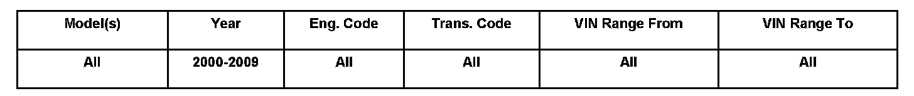
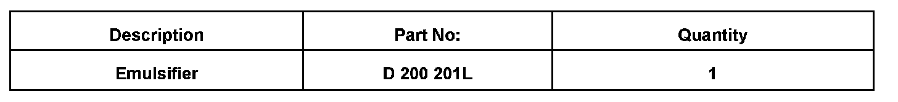

Fuel System - Neutralizing Fuel For Fuel Tank Disposal
20 08 06Oct. 13, 2008
2011499 Supersedes T.B. Group 20 number 06 01 dated February 17, 2006 due to additional model and model year applicability.

Vehicle Information
Condition
Fuel Tanks Removed from Vehicles, Neutralizing Fuel
Technical Background
Flush procedure using emulsifier to neutralize fuel tanks before shipping.
Production Solution
No production change required.
Service
This Technical Bulletin applies to fuel tank replacement, whether covered under warranty or carried out at the customer's expense.
Once a fuel tank has been replaced in a vehicle, the old tank must be flushed to properly neutralize any remaining gasoline or diesel fuel.
This procedure pertains to any fuel tank, whether being returned to the Warranty Test Center or being disposed of by other means.
WARNING:
The fuel tank must be neutralized before shipment or disposal.
To obtain the emulsifier, order Qty. 1 of Part No. D 200 201L (1 Liter). This Liter can be used to neutralize two (2) fuel tanks.
Flushing / Neutralizing
Fuel tank removed.
^ Pour 0.5 Liter of emulsifier into tank.
^ Add 4 Liters water, then cap off all openings.
^ Agitate tank for at least 30 seconds, turning tank assembly in all directions to allow emulsifier to reach all areas inside the tank.
^ After agitation, drain neutralized mixture into special container labeled "Waste Material-Hazardous" and dispose of properly in accordance with local, state and Federal EPA regulations.
For warranty repairs, add 0.5 Liter of the emulsifier to the warranty claim, using Qty. 0.5 of Part No. D 200 201L.
NOTE:
If a fuel tank is requested to be shipped to the Warranty Test Center:
Ship only after tank has been neutralized with the emulsifier.
DO NOT ship fuel tank by air.
Warranty
N/A

Required Parts and Tools
No special tools required.
Additional Information
All part and service references provided in this Technical Bulletin are subject to change and/or removal. Always check with your Parts Dept. and Repair Manuals for the latest information.